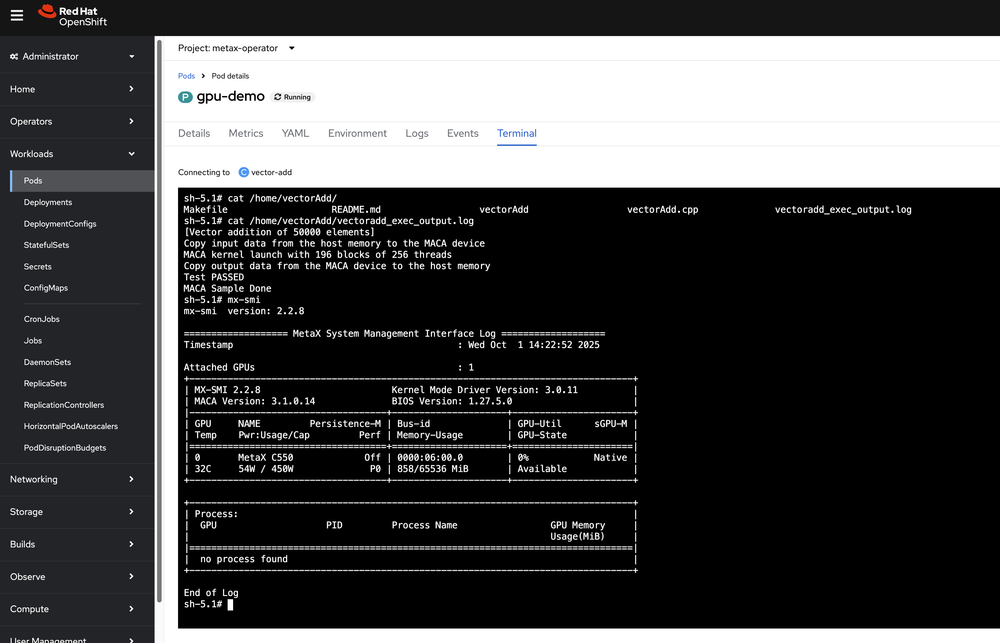
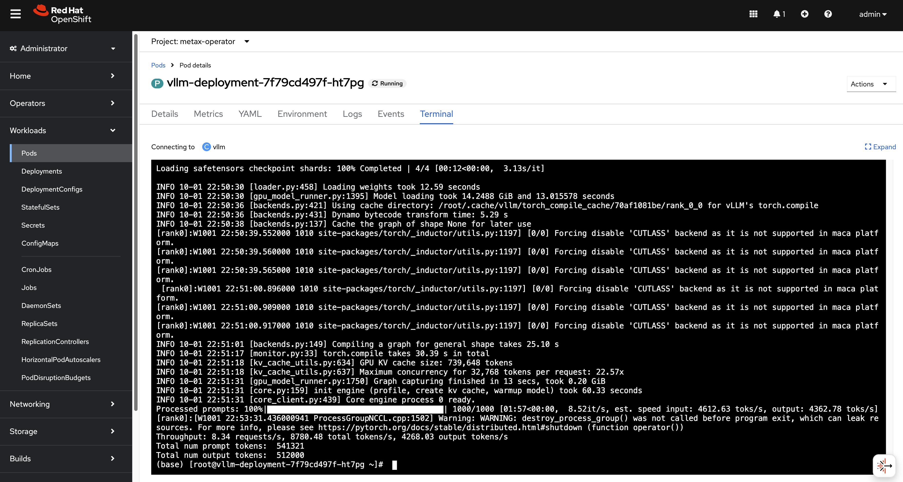
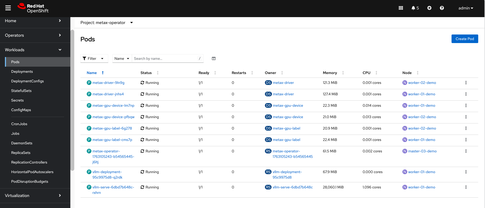
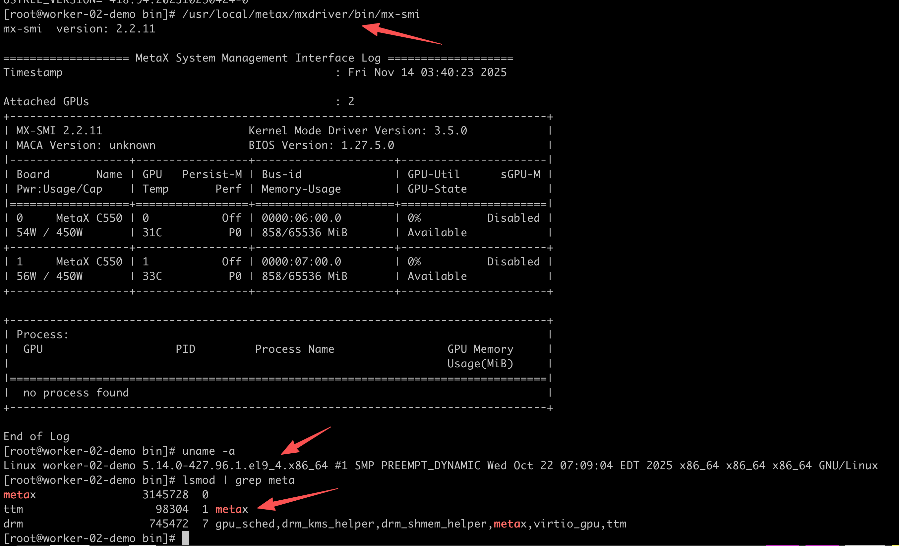

Onboarding Metax GPU on OpenShift 4.18
Introduction
This document provides a comprehensive guide for integrating Metax GPUs with an OpenShift Container Platform 4.18 cluster. Metax, a GPU vendor similar to NVIDIA, offers hardware that performs well on standard RHEL environments. However, enabling Metax GPUs on OpenShift requires specific configurations and a custom Red Hat Enterprise Linux CoreOS (RHCOS) image.
The primary objective is to build a custom RHCOS image that includes the necessary Metax drivers, deploy an OpenShift cluster using this image, and finally, install the Metax device plugin/operator to expose the GPU resources to containerized workloads. This guide covers the entire end-to-end process, from bare-metal helper node preparation to deploying a sample GPU-accelerated application.
1. DNS Configuration
A reliable DNS infrastructure is a critical prerequisite for any OpenShift installation. For this test environment, we will configure public DNS records. In a disconnected or air-gapped environment, you must provide your own internal DNS server to resolve these records.
Public DNS Records:
mirror.infra.wzhlab.top->192.168.99.1(Local Registry)api.demo-01-rhsys.wzhlab.top->192.168.99.21(Cluster API)api-int.demo-01-rhsys.wzhlab.top->192.168.99.21(Internal Cluster API)*.apps.demo-01-rhsys.wzhlab.top->192.168.99.22(Wildcard for Applications)
2. Helper Node Preparation
We will utilize a bare-metal server as a “helper node.” This server will host the necessary services (DNS, registry, etc.) and run the virtual machines (VMs) that will form the OpenShift cluster.
2.1. Kernel Boot Parameters for GPU Passthrough
To pass the physical GPU cards from the bare-metal host to the guest VMs, we need to enable IOMMU (Input-Output Memory Management Unit) in the host’s kernel. This is achieved by modifying the GRUB boot parameters.
# This command enables Intel IOMMU and passthrough mode for all kernels
sudo grubby --update-kernel=ALL --args="intel_iommu=on iommu=pt"A reboot is required for these changes to take effect.
2.2. Kernel Parameters for Overcommit and NAT
We need to adjust kernel parameters on the helper node to enable IP forwarding, which is essential for the NAT networking used by the VMs. Additionally, if the host has limited physical memory, configuring memory overcommit can provide more flexibility.
# Enable IP forwarding
cat << EOF >> /etc/sysctl.d/99-wzh-sysctl.conf
net.ipv4.ip_forward = 1
EOF
# Apply the new settings
sysctl --system
# Verify the setting
sysctl -a | grep ip_forward
# net.ipv4.ip_forward = 1
# net.ipv4.ip_forward_update_priority = 1
# net.ipv4.ip_forward_use_pmtu = 02.3. LVM Configuration for VM Storage
To efficiently manage storage for our VMs, we will create an LVM (Logical Volume Manager) thin pool using the available NVMe disks. This allows for flexible and space-efficient provisioning of logical volumes, which will serve as the virtual disks for the VMs.
# --- Configurable Variables ---
VG_NAME="vgdata"
POOL_NAME="poolA"
STRIPE_SIZE_KB=256
# Discover all NVMe disks
ALL_NVME_DISKS=$(lsblk -d -n -o NAME,TYPE | grep "nvme" | grep "disk" | awk '{print "/dev/"$1}')
echo "Discovered NVMe disks: $ALL_NVME_DISKS"
PV_DEVICES=$ALL_NVME_DISKS
# Trim whitespace
PV_DEVICES=$(echo "$PV_DEVICES" | xargs)
NUM_DISKS=$(echo "$PV_DEVICES" | wc -w)
echo "Found $NUM_DISKS NVMe disks to be used: $PV_DEVICES"
echo -e "\n--- Creating Physical Volumes (PVs) and a Volume Group (VG) ---"
echo "Initializing PVs..."
sudo pvcreate -y $PV_DEVICES
echo "Creating Volume Group '$VG_NAME'..."
sudo vgcreate "$VG_NAME" $PV_DEVICES
echo "Creating LVM thin pool '$POOL_NAME'..."
sudo lvcreate --type thin-pool -i "$NUM_DISKS" -I "${STRIPE_SIZE_KB}k" -c "${STRIPE_SIZE_KB}k" -Zn -l 99%FREE -n "$POOL_NAME" "$VG_NAME"
echo "Extending the pool to use all available space..."
lvextend -l +100%FREE $VG_NAME/$POOL_NAME2.4. KVM and Network Setup
Next, we will install KVM/libvirt packages and configure a virtual network bridge. This bridge will provide network connectivity for the OpenShift VMs and will be configured with NAT to allow outbound access.
# Install required tools and development packages
dnf -y install byobu htop jq ipmitool nmstate /usr/bin/htpasswd
dnf groupinstall -y "development" "Server with GUI"
# Install KVM and virtualization management tools
dnf -y install qemu-kvm libvirt libguestfs-tools virt-install virt-viewer virt-manager tigervnc-server
# Enable and start the libvirt daemon
systemctl enable --now libvirtd
# Prepare directory for KVM assets
mkdir -p /data/kvm
cd /data/kvm
# Define the virtual network bridge configuration
cat << EOF > /data/kvm/virt-net.xml
<network>
<name>br-ocp</name>
<bridge name='br-ocp' stp='on' delay='0'/>
<domain name='br-ocp'/>
<ip address='192.168.99.1' netmask='255.255.255.0'>
</ip>
<ip address='192.168.77.1' netmask='255.255.255.0'>
</ip>
<ip address='192.168.88.1' netmask='255.255.255.0'>
</ip>
</network>
EOF
# Create and start the virtual network
virsh net-define --file /data/kvm/virt-net.xml
virsh net-autostart br-ocp
virsh net-start br-ocp
# Verify the network status
virsh net-list --all
# Name State Autostart Persistent
# --------------------------------------------
# br-ocp active yes yes
# default active yes yes
# Configure services to start on boot
cat << EOF >> /etc/rc.d/rc.local
# Ensure the virtual network is started
virsh net-start br-ocp || true
# Start all defined VMs
virsh list --all --name | grep -v '^$' | xargs -I {} virsh start {} || true
EOF
chmod +x /etc/rc.d/rc.local
systemctl enable --now rc-local
# To disable autostart:
# chmod -x /etc/rc.d/rc.local
# systemctl disable --now rc-local2.5. VNC Server Setup
To facilitate remote management and UI-based operations on the helper node, we will set up a VNC server.
# Install GUI and VNC server packages
dnf groupinstall -y "Server with GUI"
dnf -y install tigervnc-server
# Disable the firewall for simplicity in a lab environment
systemctl disable --now firewalld.service
# Set a VNC password for the root user
mkdir -p ~/.vnc/
echo "redhat" | vncpasswd -f > ~/.vnc/passwd
chmod 600 ~/.vnc/passwd
# Configure the VNC session
cat << EOF > ~/.vnc/config
session=gnome
securitytypes=vncauth,tlsvnc
geometry=1440x855
alwaysshared
EOF
# Map a display port to the root user
cat << EOF >> /etc/tigervnc/vncserver.users
:2=root
EOF
# Enable and start the VNC server service
systemctl enable --now vncserver@:2
# To manage the service:
# systemctl start vncserver@:2
# systemctl stop vncserver@:22.6. Certificate Generation for Local Registry
We will set up an internal container registry to cache images for the disconnected OpenShift installation. Before deploying the registry, we must generate self-signed TLS certificates to secure communication.
mkdir -p /etc/crts/ && cd /etc/crts
# Generate a self-signed Certificate Authority (CA)
# Reference: https://access.redhat.com/documentation/en-us/red_hat_codeready_workspaces/2.1/html/installation_guide/installing-codeready-workspaces-in-tls-mode-with-self-signed-certificates_crw
openssl genrsa -out /etc/crts/wzhlab.top.ca.key 4096
openssl req -x509 \
-new -nodes \
-key /etc/crts/wzhlab.top.ca.key \
-sha256 \
-days 36500 \
-out /etc/crts/wzhlab.top.ca.crt \
-subj /CN="Local wzh lab Signer" \
-reqexts SAN \
-extensions SAN \
-config <(cat /etc/pki/tls/openssl.cnf \
<(printf '[SAN]\nbasicConstraints=critical, CA:TRUE\nkeyUsage=keyCertSign, cRLSign, digitalSignature'))
# Generate a server key and CSR for the registry
openssl genrsa -out /etc/crts/wzhlab.top.key 2048
openssl req -new -sha256 \
-key /etc/crts/wzhlab.top.key \
-subj "/O=Local wzh lab /CN=*.infra.wzhlab.top" \
-reqexts SAN \
-config <(cat /etc/pki/tls/openssl.cnf \
<(printf "\n[SAN]\nsubjectAltName=DNS:*.infra.wzhlab.top,DNS:*.wzhlab.top\nbasicConstraints=critical, CA:FALSE\nkeyUsage=digitalSignature, keyEncipherment, keyAgreement, dataEncipherment\nextendedKeyUsage=serverAuth")) \
-out /etc/crts/wzhlab.top.csr
# Sign the server certificate with our CA
openssl x509 \
-req \
-sha256 \
-extfile <(printf "subjectAltName=DNS:*.infra.wzhlab.top,DNS:*.wzhlab.top\nbasicConstraints=critical, CA:FALSE\nkeyUsage=digitalSignature, keyEncipherment, keyAgreement, dataEncipherment\nextendedKeyUsage=serverAuth") \
-days 36500 \
-in /etc/crts/wzhlab.top.csr \
-CA /etc/crts/wzhlab.top.ca.crt \
-CAkey /etc/crts/wzhlab.top.ca.key \
-CAcreateserial -out /etc/crts/wzhlab.top.crt
# Verify the certificate
openssl x509 -in /etc/crts/wzhlab.top.crt -text
# Add the CA certificate to the system's trust store
/bin/cp -f /etc/crts/wzhlab.top.ca.crt /etc/pki/ca-trust/source/anchors/
update-ca-trust extract2.7. Deploying the Mirror Registry (Quay)
With the TLS certificates in place, we can now deploy the
mirror registry. We will use the mirror-registry
tool provided by Red Hat, which deploys a simplified instance of
Quay.
# Reference: https://docs.openshift.com/container-platform/4.10/installing/disconnected_install/installing-mirroring-creating-registry.html
mkdir -p /data/quay
# Navigate to the directory where you downloaded the tool
# tar zvxf mirror-registry-amd64.tar.gz -C /data/quay
cd /data/quay
# Install the registry, providing the hostname and SSL certificates
./mirror-registry install -v \
-k ~/.ssh/id_ed25519 \
--initPassword redhat.. --initUser admin \
--quayHostname mirror.infra.wzhlab.top --quayRoot /data/quay \
--targetHostname mirror.infra.wzhlab.top \
--sslKey /etc/crts/wzhlab.top.key --sslCert /etc/crts/wzhlab.top.crt
# Expected output on success:
# PLAY RECAP **********************************************************************************************************************************************************************************
# root@mirror.infra.wzhlab.top : ok=46 changed=23 unreachable=0 failed=0 skipped=18 rescued=0 ignored=0
# INFO[2025-09-28 21:07:25] Quay installed successfully, config data is stored in /data/quay
# INFO[2025-09-28 21:07:25] Quay is available at https://mirror.infra.wzhlab.top:8443 with credentials (admin, redhat..)
# To uninstall the registry:
# cd /data/quay
# ./mirror-registry uninstall -v \
# -k ~/.ssh/id_ed25519 \
# --autoApprove true --quayRoot /data/quay \
# --targetHostname mirror.infra.wzhlab.top3. OpenShift Cluster Installation
With the helper node fully configured, we can proceed with the OpenShift installation.
3.1. Initial Setup and Tooling
First, we’ll create a dedicated user for the installation process and download the required OpenShift client binaries.
# Create a dedicated user for the installation
useradd -m sno
su - sno
# Configure passwordless SSH for convenience
ssh-keygen -t ed25519 -f ~/.ssh/id_ed25519 -N "" -q
cat << EOF > ~/.ssh/config
StrictHostKeyChecking no
UserKnownHostsFile=/dev/null
EOF
chmod 600 ~/.ssh/config
# Set environment variables for the installation
cat << 'EOF' >> ~/.bashrc
export BASE_DIR='/home/sno'
export BUILDNUMBER=4.18.27
# export BUILDNUMBER=4.19.17
EOF
source ~/.bashrc
# Set the specific OpenShift version for this installation
# export BUILDNUMBER=4.18.24
# Create directories for installation files
mkdir -p ${BASE_DIR}/data/ocp-${BUILDNUMBER}
mkdir -p $HOME/.local/bin
cd ${BASE_DIR}/data/ocp-${BUILDNUMBER}
# Download OpenShift client, installer, and mirror tools
wget -O openshift-client-linux-${BUILDNUMBER}.tar.gz https://mirror.openshift.com/pub/openshift-v4/x86_64/clients/ocp/${BUILDNUMBER}/openshift-client-linux-${BUILDNUMBER}.tar.gz
wget -O openshift-install-linux-${BUILDNUMBER}.tar.gz https://mirror.openshift.com/pub/openshift-v4/x86_64/clients/ocp/${BUILDNUMBER}/openshift-install-linux-${BUILDNUMBER}.tar.gz
wget -O oc-mirror.tar.gz https://mirror.openshift.com/pub/openshift-v4/x86_64/clients/ocp/${BUILDNUMBER}/oc-mirror.tar.gz
# Extract and install the binaries
tar -xzf openshift-client-linux-${BUILDNUMBER}.tar.gz -C $HOME/.local/bin/
tar -xzf openshift-install-linux-${BUILDNUMBER}.tar.gz -C $HOME/.local/bin/
tar -xzf oc-mirror.tar.gz -C $HOME/.local/bin/
chmod +x $HOME/.local/bin/oc-mirror
# Download butane and coreos-installer
wget -nd -np -e robots=off --reject="index.html*" -P ./ --recursive -A "butane-amd64" https://mirror.openshift.com/pub/openshift-v4/x86_64/clients/butane/latest/
wget -nd -np -e robots=off --reject="index.html*" -P ./ -r -A "coreos-installer_amd64" https://mirror.openshift.com/pub/openshift-v4/x86_64/clients/coreos-installer/latest/
install -m 755 ./butane-amd64 $HOME/.local/bin/butane
install -m 755 ./coreos-installer_amd64 $HOME/.local/bin/coreos-installer
# Download mirror-registry tool
wget -O mirror-registry-amd64.tar.gz https://mirror.openshift.com/pub/cgw/mirror-registry/latest/mirror-registry-amd64.tar.gz
# Download Helm client
wget -O helm-linux-amd64.tar.gz https://developers.redhat.com/content-gateway/file/pub/openshift-v4/clients/helm/3.17.1/helm-linux-amd64.tar.gz
tar xzf helm-linux-amd64.tar.gz -C $HOME/.local/bin/
mv ~/.local/bin/helm-linux-amd64 ~/.local/bin/helm3.2. Mirroring Container Images
Before starting the installation, we must mirror all required OpenShift container images to our local Quay registry. This is a crucial step for a disconnected installation.
# Reference: https://github.com/openshift/oc-mirror
mkdir -p ${BASE_DIR}/data/mirror/
# Define the ImageSetConfiguration for oc-mirror
# This specifies the OpenShift version, operators, and any additional images to mirror.
tee ${BASE_DIR}/data/mirror/mirror.yaml << EOF
apiVersion: mirror.openshift.io/v1alpha2
kind: ImageSetConfiguration
mirror:
platform:
architectures:
- amd64
channels:
- name: stable-4.18
type: ocp
minVersion: 4.18.27
maxVersion: 4.18.27
shortestPath: true
graph: false
# operators:
# - catalog: registry.redhat.io/redhat/redhat-operator-index:v4.18
# packages:
# - name: nfd
# - name: kubevirt-hyperconverged
# additionalImages:
# This is the custom RHCOS image we will build later
# - name: quay.io/wangzheng422/ocp:418.94.202509301252-metax-0-x86_64
# - name: quay.io/wangzheng422/ocp:418.94.202509301252-metax-0-x86_64-sdk-v01
EOF
cd ${BASE_DIR}/data/mirror/
INSTALL_IMAGE_REGISTRY=mirror.infra.wzhlab.top:8443
# Log in to the local registry
podman login $INSTALL_IMAGE_REGISTRY -u admin -p redhat..
# Run oc-mirror to start the mirroring process
# Note: This will take a significant amount of time and disk space.
oc-mirror --v2 --config ${BASE_DIR}/data/mirror/mirror.yaml --authfile ${BASE_DIR}/data/pull-secret.json --workspace file://${BASE_DIR}/data/mirror/ docker://$INSTALL_IMAGE_REGISTRY
# After mirroring, oc-mirror generates several YAML files in the working-dir/cluster-resources directory.
# These files must be applied to the cluster post-installation to configure it to use the local registry.3.3. Configuring and Launching the OpenShift Installation
Now we create the configuration files
(install-config.yaml,
agent-config.yaml) that define our cluster topology
and then generate the agent-based installation ISO.
# export BUILDNUMBER=4.18.24
mkdir -p ${BASE_DIR}/data/{sno/disconnected,install}
# Define cluster network and node parameters
INSTALL_IMAGE_REGISTRY=mirror.infra.wzhlab.top:8443
PULL_SECRET=$(cat ${BASE_DIR}/data/pull-secret.json)
# Create a file with default environment variables for the cluster nodes
cat << 'EOF' > ${BASE_DIR}/data/ocp-default.env
CIDR_PREFIX=192.168.99
CIDR_PREFIX_02=192.168.77
NTP_SERVER=time.nju.edu.cn
HELP_SERVER=$CIDR_PREFIX.11
API_VIP=$CIDR_PREFIX.21
INGRESS_VIP=$CIDR_PREFIX.22
MACHINE_NETWORK="$CIDR_PREFIX.0/24"
SNO_CLUSTER_NAME=demo-01-rhsys
SNO_BASE_DOMAIN=wzhlab.top
MASTER_01_IP=$CIDR_PREFIX.23
MASTER_02_IP=$CIDR_PREFIX.24
MASTER_03_IP=$CIDR_PREFIX.25
WORKER_01_IP=$CIDR_PREFIX.26
WORKER_02_IP=$CIDR_PREFIX.27
MASTER_01_IP_02=$CIDR_PREFIX_02.23
MASTER_02_IP_02=$CIDR_PREFIX_02.24
MASTER_03_IP_02=$CIDR_PREFIX_02.25
WORKER_01_IP_02=$CIDR_PREFIX_02.26
WORKER_02_IP_02=$CIDR_PREFIX_02.27
MASTER_01_HOSTNAME=master-01-demo
MASTER_02_HOSTNAME=master-02-demo
MASTER_03_HOSTNAME=master-03-demo
WORKER_01_HOSTNAME=worker-01-demo
WORKER_02_HOSTNAME=worker-02-demo
MASTER_01_INTERFACE=enp1s0
MASTER_02_INTERFACE=enp1s0
MASTER_03_INTERFACE=enp1s0
WORKER_01_INTERFACE=enp1s0
WORKER_02_INTERFACE=enp1s0
MASTER_01_INTERFACE_02=enp2s0
MASTER_02_INTERFACE_02=enp2s0
MASTER_03_INTERFACE_02=enp2s0
WORKER_01_INTERFACE_02=enp2s0
WORKER_02_INTERFACE_02=enp2s0
MASTER_01_INTERFACE_MAC=00:50:56:8e:2a:31
MASTER_02_INTERFACE_MAC=00:50:56:8e:2a:32
MASTER_03_INTERFACE_MAC=00:50:56:8e:2a:33
WORKER_01_INTERFACE_MAC=00:50:56:8e:2a:51
WORKER_02_INTERFACE_MAC=00:50:56:8e:2a:52
MASTER_01_INTERFACE_02_MAC=00:50:56:8e:2b:31
MASTER_02_INTERFACE_02_MAC=00:50:56:8e:2b:32
MASTER_03_INTERFACE_02_MAC=00:50:56:8e:2b:33
WORKER_01_INTERFACE_02_MAC=00:50:56:8e:2b:51
WORKER_02_INTERFACE_02_MAC=00:50:56:8e:2b:52
MASTER_01_DISK=/dev/vda
MASTER_02_DISK=/dev/vda
MASTER_03_DISK=/dev/vda
WORKER_01_DISK=/dev/vda
WORKER_02_DISK=/dev/vda
OCP_GW=$CIDR_PREFIX.1
OCP_NETMASK=255.255.255.0
OCP_NETMASK_S=24
OCP_DNS=223.5.5.5
OCP_GW_v6=fd03::11
OCP_NETMASK_v6=64
EOF
source ${BASE_DIR}/data/ocp-default.env
mkdir -p ${BASE_DIR}/data/install
cd ${BASE_DIR}/data/install
# Clean up previous installation attempts
/bin/rm -rf *.ign .openshift_install_state.json auth bootstrap manifests master*[0-9] worker*[0-9] *
# Create the main install-config.yaml
cat << EOF > ${BASE_DIR}/data/install/install-config.yaml
apiVersion: v1
baseDomain: $SNO_BASE_DOMAIN
compute:
- name: worker
replicas: 2
controlPlane:
name: master
replicas: 3
metadata:
name: $SNO_CLUSTER_NAME
networking:
networkType: OVNKubernetes
clusterNetwork:
- cidr: 10.132.0.0/14
hostPrefix: 23
machineNetwork:
- cidr: $MACHINE_NETWORK
serviceNetwork:
- 172.22.0.0/16
platform:
baremetal:
apiVIPs:
- $API_VIP
ingressVIPs:
- $INGRESS_VIP
pullSecret: '${PULL_SECRET}'
sshKey: |
$( cat ${BASE_DIR}/.ssh/id_ed25519.pub | sed 's/^/ /g' )
additionalTrustBundle: |
$( cat /etc/crts/wzhlab.top.ca.crt | sed 's/^/ /g' )
ImageDigestSources:
- mirrors:
- ${INSTALL_IMAGE_REGISTRY}/openshift/release-images
source: quay.io/openshift-release-dev/ocp-release
- mirrors:
- ${INSTALL_IMAGE_REGISTRY}/openshift/release
source: quay.io/openshift-release-dev/ocp-v4.0-art-dev
EOF
# Create the agent-config.yaml for static IP configuration
cat << EOF > ${BASE_DIR}/data/install/agent-config.yaml
apiVersion: v1alpha1
kind: AgentConfig
metadata:
name: $SNO_CLUSTER_NAME
rendezvousIP: $MASTER_01_IP
additionalNTPSources:
- $NTP_SERVER
hosts:
- hostname: $MASTER_01_HOSTNAME
role: master
rootDeviceHints:
deviceName: "$MASTER_01_DISK"
interfaces:
- name: $MASTER_01_INTERFACE
macAddress: $MASTER_01_INTERFACE_MAC
- name: $MASTER_01_INTERFACE_02
macAddress: $MASTER_01_INTERFACE_02_MAC
networkConfig:
interfaces:
- name: $MASTER_01_INTERFACE
type: ethernet
state: up
mac-address: $MASTER_01_INTERFACE_MAC
ipv4:
enabled: true
address:
- ip: $MASTER_01_IP
prefix-length: $OCP_NETMASK_S
dhcp: false
- name: $MASTER_01_INTERFACE_02
type: ethernet
state: up
mac-address: $MASTER_01_INTERFACE_02_MAC
ipv4:
enabled: true
address:
- ip: $MASTER_01_IP_02
prefix-length: $OCP_NETMASK_S
dhcp: false
dns-resolver:
config:
server:
- $OCP_DNS
routes:
config:
- destination: 0.0.0.0/0
next-hop-address: $OCP_GW
next-hop-interface: $MASTER_01_INTERFACE
table-id: 254
- hostname: $MASTER_02_HOSTNAME
role: master
rootDeviceHints:
deviceName: "$MASTER_02_DISK"
interfaces:
- name: $MASTER_02_INTERFACE
macAddress: $MASTER_02_INTERFACE_MAC
- name: $MASTER_02_INTERFACE_02
macAddress: $MASTER_02_INTERFACE_02_MAC
networkConfig:
interfaces:
- name: $MASTER_02_INTERFACE
type: ethernet
state: up
mac-address: $MASTER_02_INTERFACE_MAC
ipv4:
enabled: true
address:
- ip: $MASTER_02_IP
prefix-length: $OCP_NETMASK_S
dhcp: false
- name: $MASTER_02_INTERFACE_02
type: ethernet
state: up
mac-address: $MASTER_02_INTERFACE_02_MAC
ipv4:
enabled: true
address:
- ip: $MASTER_02_IP_02
prefix-length: $OCP_NETMASK_S
dhcp: false
dns-resolver:
config:
server:
- $OCP_DNS
routes:
config:
- destination: 0.0.0.0/0
next-hop-address: $OCP_GW
next-hop-interface: $MASTER_02_INTERFACE
table-id: 254
- hostname: $MASTER_03_HOSTNAME
role: master
rootDeviceHints:
deviceName: "$MASTER_03_DISK"
interfaces:
- name: $MASTER_03_INTERFACE
macAddress: $MASTER_03_INTERFACE_MAC
- name: $MASTER_03_INTERFACE_02
macAddress: $MASTER_03_INTERFACE_02_MAC
networkConfig:
interfaces:
- name: $MASTER_03_INTERFACE
type: ethernet
state: up
mac-address: $MASTER_03_INTERFACE_MAC
ipv4:
enabled: true
address:
- ip: $MASTER_03_IP
prefix-length: $OCP_NETMASK_S
dhcp: false
- name: $MASTER_03_INTERFACE_02
type: ethernet
state: up
mac-address: $MASTER_03_INTERFACE_02_MAC
ipv4:
enabled: true
address:
- ip: $MASTER_03_IP_02
prefix-length: $OCP_NETMASK_S
dhcp: false
dns-resolver:
config:
server:
- $OCP_DNS
routes:
config:
- destination: 0.0.0.0/0
next-hop-address: $OCP_GW
next-hop-interface: $MASTER_03_INTERFACE
table-id: 254
- hostname: $WORKER_01_HOSTNAME
role: worker
rootDeviceHints:
deviceName: "$WORKER_01_DISK"
interfaces:
- name: $WORKER_01_INTERFACE
macAddress: $WORKER_01_INTERFACE_MAC
- name: $WORKER_01_INTERFACE_02
macAddress: $WORKER_01_INTERFACE_02_MAC
networkConfig:
interfaces:
- name: $WORKER_01_INTERFACE
type: ethernet
state: up
mac-address: $WORKER_01_INTERFACE_MAC
ipv4:
enabled: true
address:
- ip: $WORKER_01_IP
prefix-length: $OCP_NETMASK_S
dhcp: false
- name: $WORKER_01_INTERFACE_02
type: ethernet
state: up
mac-address: $WORKER_01_INTERFACE_02_MAC
ipv4:
enabled: true
address:
- ip: $WORKER_01_IP_02
prefix-length: $OCP_NETMASK_S
dhcp: false
dns-resolver:
config:
server:
- $OCP_DNS
routes:
config:
- destination: 0.0.0.0/0
next-hop-address: $OCP_GW
next-hop-interface: $WORKER_01_INTERFACE
table-id: 254
- hostname: $WORKER_02_HOSTNAME
role: worker
rootDeviceHints:
deviceName: "$WORKER_02_DISK"
interfaces:
- name: $WORKER_02_INTERFACE
macAddress: $WORKER_02_INTERFACE_MAC
- name: $WORKER_02_INTERFACE_02
macAddress: $WORKER_02_INTERFACE_02_MAC
networkConfig:
interfaces:
- name: $WORKER_02_INTERFACE
type: ethernet
state: up
mac-address: $WORKER_02_INTERFACE_MAC
ipv4:
enabled: true
address:
- ip: $WORKER_02_IP
prefix-length: $OCP_NETMASK_S
dhcp: false
- name: $WORKER_02_INTERFACE_02
type: ethernet
state: up
mac-address: $WORKER_02_INTERFACE_02_MAC
ipv4:
enabled: true
address:
- ip: $WORKER_02_IP_02
prefix-length: $OCP_NETMASK_S
dhcp: false
dns-resolver:
config:
server:
- $OCP_DNS
routes:
config:
- destination: 0.0.0.0/0
next-hop-address: $OCP_GW
next-hop-interface: $WORKER_02_INTERFACE
table-id: 254
EOF
/bin/cp -f ${BASE_DIR}/data/install/install-config.yaml ${BASE_DIR}/data/install/install-config.yaml.bak
# Generate the cluster manifests from the config files
openshift-install --dir=${BASE_DIR}/data/install agent create cluster-manifests
cd ${BASE_DIR}/data/install/
# Create the agent installation ISO
# The installer will automatically cache downloaded files in ~/.cache/agent/
mkdir -p ${HOME}/.cache/agent/{files_cache,image_cache}
openshift-install --dir=${BASE_DIR}/data/install agent create image --log-level=debug3.4. Provisioning VMs for OpenShift Installation
With the installation ISO created, we can now define and launch the KVM virtual machines. These VMs will boot from the ISO, which will trigger the automated, unattended installation of OpenShift.
# Verify the host CPU model for KVM configuration
virsh capabilities | grep model
# <model>Icelake-Server-v2</model>
# (Optional) Clean up any existing logical volumes from previous attempts
# lv_list=$(lvdisplay -c | cut -d: -f1 | grep '.*/lv')
# for lv in $lv_list; do
# echo "Deleting $lv..."
# lvremove -f $lv
# done
# Identify PCI addresses of the Metax GPU devices for passthrough
lspci -nn | grep -i 9999
# 0f:00.0 Display controller [0380]: Device [9999:4000] (rev 01)
# ...
virsh nodedev-list --cap pci
# pci_0000_0f_00_0
# Copy the generated ISO to the KVM directory
/bin/cp -f /home/sno/data/install/agent.x86_64.iso /data/kvm/
# LV creation helper function
create_lv() {
var_vg=$1
var_pool=$2
var_lv=$3
var_size=$4
var_action=$5
lvremove -f $var_vg/$var_lv || true
if [ "$var_action" == "recreate" ]; then
lvcreate --type thin -n $var_lv -V $var_size --thinpool $var_vg/$var_pool
wipefs --all --force /dev/$var_vg/$var_lv
fi
}
# Source the cluster environment variables
source /home/sno/data/ocp-default.env
SNO_CPU=host-model
# --- Provision Master Node 1 ---
SNO_CPU_CORE=8
SNO_MEM=32
virsh destroy demo-01-master-01
virsh undefine demo-01-master-01
create_lv vgdata poolA lv-demo-01-master-01 120G recreate
virt-install --name=demo-01-master-01 --vcpus=$SNO_CPU_CORE --ram=$(($SNO_MEM*1024)) \
--cpu=$SNO_CPU \
--disk path=/dev/vgdata/lv-demo-01-master-01,device=disk,bus=virtio,format=raw,discard=unmap \
--os-variant rhel9.6 \
--network bridge=br-ocp,model=virtio,mac=$MASTER_01_INTERFACE_MAC \
--network bridge=br-ocp,model=virtio,mac=$MASTER_01_INTERFACE_02_MAC \
--graphics vnc,listen=127.0.0.1,port=59001 --noautoconsole \
--boot menu=on --cdrom /data/kvm/agent.x86_64.iso
# --- Provision Master Node 2 ---
SNO_CPU_CORE=8
SNO_MEM=32
virsh destroy demo-01-master-02
virsh undefine demo-01-master-02
create_lv vgdata poolA lv-demo-01-master-02 120G recreate
virt-install --name=demo-01-master-02 --vcpus=$SNO_CPU_CORE --ram=$(($SNO_MEM*1024)) \
--cpu=$SNO_CPU \
--disk path=/dev/vgdata/lv-demo-01-master-02,device=disk,bus=virtio,format=raw,discard=unmap \
--os-variant rhel9.6 \
--network bridge=br-ocp,model=virtio,mac=$MASTER_02_INTERFACE_MAC \
--network bridge=br-ocp,model=virtio,mac=$MASTER_02_INTERFACE_02_MAC \
--graphics vnc,listen=127.0.0.1,port=59002 --noautoconsole \
--boot menu=on --cdrom /data/kvm/agent.x86_64.iso
# --- Provision Master Node 3 ---
SNO_CPU_CORE=8
SNO_MEM=32
virsh destroy demo-01-master-03
virsh undefine demo-01-master-03
create_lv vgdata poolA lv-demo-01-master-03 120G recreate
virt-install --name=demo-01-master-03 --vcpus=$SNO_CPU_CORE --ram=$(($SNO_MEM*1024)) \
--cpu=$SNO_CPU \
--disk path=/dev/vgdata/lv-demo-01-master-03,device=disk,bus=virtio,format=raw,discard=unmap \
--os-variant rhel9.6 \
--network bridge=br-ocp,model=virtio,mac=$MASTER_03_INTERFACE_MAC \
--network bridge=br-ocp,model=virtio,mac=$MASTER_03_INTERFACE_02_MAC \
--graphics vnc,listen=127.0.0.1,port=59003 --noautoconsole \
--boot menu=on --cdrom /data/kvm/agent.x86_64.iso
# Detach GPUs from host before assigning to worker VMs
virsh nodedev-detach pci_0000_0f_00_0
virsh nodedev-detach pci_0000_34_00_0
# --- Provision Worker Node 1 (with GPU Passthrough) ---
SNO_CPU_CORE=50
SNO_MEM=450
virsh destroy demo-01-worker-01
virsh undefine demo-01-worker-01
create_lv vgdata poolA lv-demo-01-worker-01 1200G recreate
virt-install --name=demo-01-worker-01 --vcpus=$SNO_CPU_CORE --ram=$(($SNO_MEM*1024)) \
--cpu=$SNO_CPU \
--disk path=/dev/vgdata/lv-demo-01-worker-01,device=disk,bus=virtio,format=raw,discard=unmap \
--os-variant rhel9.6 \
--network bridge=br-ocp,model=virtio,mac=$WORKER_01_INTERFACE_MAC \
--network bridge=br-ocp,model=virtio,mac=$WORKER_01_INTERFACE_02_MAC \
--host-device pci_0000_0f_00_0 \
--host-device pci_0000_34_00_0 \
--graphics vnc,listen=127.0.0.1,port=59004 --noautoconsole \
--boot menu=on --cdrom /data/kvm/agent.x86_64.iso
# Detach GPUs from host before assigning to worker VMs
virsh nodedev-detach pci_0000_87_00_0
virsh nodedev-detach pci_0000_ae_00_0
# --- Provision Worker Node 2 (with GPU Passthrough) ---
SNO_CPU_CORE=50
SNO_MEM=450
virsh destroy demo-01-worker-02
virsh undefine demo-01-worker-02
create_lv vgdata poolA lv-demo-01-worker-02 1200G recreate
virt-install --name=demo-01-worker-02 --vcpus=$SNO_CPU_CORE --ram=$(($SNO_MEM*1024)) \
--cpu=$SNO_CPU \
--disk path=/dev/vgdata/lv-demo-01-worker-02,device=disk,bus=virtio,format=raw,discard=unmap \
--os-variant rhel9.6 \
--network bridge=br-ocp,model=virtio,mac=$WORKER_02_INTERFACE_MAC \
--network bridge=br-ocp,model=virtio,mac=$WORKER_02_INTERFACE_02_MAC \
--host-device pci_0000_87_00_0 \
--host-device pci_0000_ae_00_0 \
--graphics vnc,listen=127.0.0.1,port=59005 --noautoconsole \
--boot menu=on --cdrom /data/kvm/agent.x86_64.iso3.5. Monitoring the Installation Progress
During the installation, the VMs may shut down instead of rebooting. A simple monitoring loop can ensure they are restarted promptly.
# This loop checks for shutdown VMs and starts them every 10 seconds.
while true; do virsh list --state-shutoff --name | xargs -r -I {} virsh start {}; sleep 10; doneYou can monitor the installation progress from the helper
node using the openshift-install command.
# Set the KUBECONFIG environment variable
cd ${BASE_DIR}/data/install
export KUBECONFIG=${BASE_DIR}/data/install/auth/kubeconfig
echo "export KUBECONFIG=${BASE_DIR}/data/install/auth/kubeconfig" >> ~/.bashrc
# Wait for the bootstrap process to complete
cd ${BASE_DIR}/data/install
openshift-install --dir=${BASE_DIR}/data/install agent wait-for bootstrap-complete --log-level=debug
# Expected output:
# INFO Bootstrap Kube API Initialized
# INFO Bootstrap configMap status is complete
# INFO cluster bootstrap is complete
# Wait for the final installation to complete
cd ${BASE_DIR}/data/install
openshift-install --dir=${BASE_DIR}/data/install agent wait-for install-complete --log-level=debug
# Expected output:
# INFO Cluster is installed
# INFO Install complete!
# INFO To access the cluster as the system:admin user when using 'oc', run
# INFO export KUBECONFIG=/home/lab-user/data/install/auth/kubeconfig
# INFO Access the OpenShift web-console here: https://console-openshift-console.apps.demo-rhsys.wzhlab.top
# INFO Login to the console with user: "kubeadmin", and password: "..."4. Post-Installation Configuration
4.1. Node Access Configuration (Optional)
For development and debugging purposes, it can be useful to enable password-based root login on the cluster nodes. This is not recommended for production environments.
# On the helper node, as the 'sno' user
# Create a script to enable root login and set password
cat > ${BASE_DIR}/data/install/crack.txt << 'EOF'
echo redhat | sudo passwd --stdin root
sudo sh -c 'echo "PasswordAuthentication yes" > /etc/ssh/sshd_config.d/20-wzh.conf '
sudo sh -c 'echo "PermitRootLogin yes" >> /etc/ssh/sshd_config.d/20-wzh.conf '
sudo sh -c 'echo "ClientAliveInterval 1800" >> /etc/ssh/sshd_config.d/20-wzh.conf '
sudo systemctl restart sshd
sudo sh -c 'echo "export KUBECONFIG=/etc/kubernetes/static-pod-resources/kube-apiserver-certs/secrets/node-kubeconfigs/localhost.kubeconfig" >> /root/.bashrc'
sudo sh -c 'echo "RET=\`oc config use-context system:admin\`" >> /root/.bashrc'
EOF
# Apply the script to all master nodes
for i in 23 24 25
do
ssh core@192.168.99.$i < ${BASE_DIR}/data/install/crack.txt
done
# Create a similar script for worker nodes (without kubeconfig setup)
cat > ${BASE_DIR}/data/install/crack.worker.txt << 'EOF'
echo redhat | sudo passwd --stdin root
sudo sh -c 'echo "PasswordAuthentication yes" > /etc/ssh/sshd_config.d/20-wzh.conf '
sudo sh -c 'echo "PermitRootLogin yes" >> /etc/ssh/sshd_config.d/20-wzh.conf '
sudo sh -c 'echo "ClientAliveInterval 1800" >> /etc/ssh/sshd_config.d/20-wzh.conf '
sudo systemctl restart sshd
EOF
# Apply the script to all worker nodes
for i in 26 27
do
ssh core@192.168.99.$i < ${BASE_DIR}/data/install/crack.worker.txt
done4.2. Configuring HTPasswd Identity Provider
To provide a simple authentication mechanism, you can configure the HTPasswd identity provider. This allows you to create users with standard usernames and passwords.
- Reference: https://docs.openshift.com/container-platform/4.13/authentication/identity_providers/configuring-htpasswd-identity-provider.html
# Install htpasswd utility on the helper node
sudo dnf install -y /usr/bin/htpasswd
# Create an htpasswd file with an initial admin user
htpasswd -c -B -b ${BASE_DIR}/data/install/users.htpasswd admin redhat
# Add an additional user
htpasswd -B -b ${BASE_DIR}/data/install/users.htpasswd user01 redhat
# Create a secret in the cluster from the htpasswd file
oc create secret generic htpass-secret \
--from-file=htpasswd=${BASE_DIR}/data/install/users.htpasswd \
-n openshift-config
# Patch the cluster OAuth configuration to use the HTPasswd provider
cat << EOF > ${BASE_DIR}/data/install/oauth.yaml
spec:
identityProviders:
- name: htpasswd
mappingMethod: claim
type: HTPasswd
htpasswd:
fileData:
name: htpass-secret
EOF
oc patch oauth/cluster --type merge --patch-file=${BASE_DIR}/data/install/oauth.yaml
# Grant cluster-admin privileges to the new admin user
oc adm policy add-cluster-role-to-user cluster-admin admin
# Grant admin role in a specific project to the new user
oc adm policy add-role-to-user admin user01 -n llm-demo5. Building a Custom RHCOS Image with Metax Drivers
The standard RHCOS image does not contain the necessary
drivers for Metax GPUs, and metax gpu driver depends on specific
old kernel version. Therefore, we must build a custom image.
This process involves setting up a build environment, preparing
RPM repositories, and using the coreos-assembler
(cosa) tool.
5.1. Setting Up a RHEL 9 Build Environment
First, provision a RHEL 9 VM that will serve as our build machine.
cd /data/kvm
# LV creation helper function
create_lv() {
var_vg=$1
var_pool=$2
var_lv=$3
var_size=$4
var_action=$5
lvremove -f $var_vg/$var_lv || true
if [ "$var_action" == "recreate" ]; then
lvcreate --type thin -n $var_lv -V $var_size --thinpool $var_pool
wipefs --all --force /dev/$var_vg/$var_lv
fi
}
SNO_MEM=64
virsh destroy demo-01-test
virsh undefine demo-01-test
create_lv vgdata poolA lv-demo-01-test 200G recreate
# Install RHEL 9 using a kickstart file
virt-install --name=demo-01-test --vcpus=32 --ram=$(($SNO_MEM*1024)) \
--cpu=host-model \
--disk path=/dev/vgdata/lv-demo-01-test,device=disk,bus=virtio,format=raw \
--os-variant rhel9.6 \
--network bridge=br-ocp,model=virtio \
--graphics vnc,listen=127.0.0.1,port=58001 --noautoconsole \
--boot menu=on --location /data/kvm/rhel94.iso \
--initrd-inject helper-ks-rhel9.cfg --extra-args "inst.ks=file:/helper-ks-rhel9.cfg"
# Inside the RHEL 9 VM, lock the release to 9.4 to match OCP 4.18 dependencies
sudo subscription-manager release --set=9.4
# Enable the correct EUS repositories for RHEL 9.4
sudo subscription-manager repos --disable="rhel-9-for-x86_64-baseos-rpms" --disable="rhel-9-for-x86_64-appstream-rpms"
sudo subscription-manager repos --enable="rhel-9-for-x86_64-baseos-eus-rpms" --enable="rhel-9-for-x86_64-appstream-eus-rpms"5.2. Preparing RPM Repositories
The RHCOS build process requires access to all necessary RPMs. We will sync the required repositories to the build machine and host them locally via a simple web server.
# On the RHEL 9 build VM
sudo dnf install -y createrepo_c
mkdir -p /data/dnf/
cd /data/dnf/
# Sync all required RHEL and OpenShift repositories
dnf reposync --repoid=rhel-9-for-x86_64-baseos-eus-rpms -m --download-metadata --delete -n
dnf reposync --repoid=rhel-9-for-x86_64-appstream-eus-rpms -m --download-metadata --delete -n
dnf reposync --repoid=rhel-9-for-x86_64-nfv-rpms -m --download-metadata --delete -n
dnf reposync --repoid=fast-datapath-for-rhel-9-x86_64-rpms -m --download-metadata --delete -n
dnf reposync --repoid=rhocp-4.18-for-rhel-9-x86_64-rpms -m --download-metadata --delete -n
dnf reposync --repoid=rhocp-ironic-4.18-for-rhel-9-x86_64-rpms -m --download-metadata --delete -n
dnf reposync --repoid=ocp-tools-4.18-for-rhel-9-x86_64-rpms -m --download-metadata --delete -n
dnf reposync --repoid=cnv-4.18-for-rhel-9-x86_64-rpms -m --download-metadata --delete -n
# Create a custom repository for kernel packages and Metax drivers
mkdir -p /data/dnf/wzh-fix-repo
cd /data/dnf/wzh-fix-repo
# Download the specific kernel version required by metax gpu and its dependencies
PACKAGES_TO_QUERY=(
"kernel-core-5.14.0-427.13.1.el9_4"
"kernel-devel-5.14.0-427.13.1.el9_4"
"kernel-headers-5.14.0-427.13.1.el9_4"
"kernel-modules-5.14.0-427.13.1.el9_4"
"kernel-modules-extra-5.14.0-427.13.1.el9_4"
"kernel-5.14.0-427.13.1.el9_4"
)
COMBINED_DEPS_FILE=$(mktemp)
for pkg in "${PACKAGES_TO_QUERY[@]}"; do
dnf repoquery -q --requires --resolve --recursive --queryformat '%{name}-%{version}-%{release}.%{arch}' "$pkg" >> "$COMBINED_DEPS_FILE"
echo "$pkg" >> "$COMBINED_DEPS_FILE"
done
sort -u "$COMBINED_DEPS_FILE" | xargs sudo dnf download --destdir=.
rm -f "$COMBINED_DEPS_FILE"
# Download and extract Metax driver RPMs
mkdir -p /data/build/metax.base/tmp.driver
cd /data/build/metax.base/tmp.driver
wget -O metax-driver-3.1.0.11-rpm-x86_64.run "https://metax-pub.oss-cn-shanghai.aliyuncs.com/mxmaca2.0/3.1.0.x/binary/x86_64/driver/metax-driver-3.1.0.11-rpm-x86_64.run"
bash metax-driver-3.1.0.11-rpm-x86_64.run --noexec --keep
# The mxgvm driver is not needed for this setup
/bin/rm -f ./metax-driver-3.1.0.11/mxgvm-3.0.11-1.x86_64.rpm
/bin/cp -f ./*.rpm /data/dnf/wzh-fix-repo/
# Create the repository index
cd /data/dnf/wzh-fix-repo/
createrepo_c ./
# Serve the repositories over HTTP
cd /data/dnf
python3 -m http.server5.3. Building the RHCOS Image
With the repositories in place, we can now use
coreos-assembler to build the custom image.
# On the RHEL 9 build VM
# Reference: https://github.com/wangzheng422/machine-os-content/tree/metax-ocp-4.18
# Set the container image for the build tool
export COREOS_ASSEMBLER_CONTAINER=quay.io/coreos-assembler/coreos-assembler:rhcos-4.18
podman pull $COREOS_ASSEMBLER_CONTAINER
mkdir -p /data/rhcos
cd /data/rhcos
rm -rf *
# Define the cosa helper function
cosa() {
env | grep COREOS_ASSEMBLER
local -r COREOS_ASSEMBLER_CONTAINER_LATEST="quay.io/coreos-assembler/coreos-assembler:latest"
if [[ -z ${COREOS_ASSEMBLER_CONTAINER} ]] && $(podman image exists ${COREOS_ASSEMBLER_CONTAINER_LATEST}); then
local -r cosa_build_date_str="$(podman inspect -f "{{.Created}}" ${COREOS_ASSEMBLER_CONTAINER_LATEST} | awk '{print $1}')"
local -r cosa_build_date="$(date -d ${cosa_build_date_str} +%s)"
if [[ $(date +%s) -ge $((cosa_build_date + 60*60*24*7)) ]] ; then
echo -e "\e[0;33m----" >&2
echo "The COSA container image is more that a week old and likely outdated." >&2
echo "You should pull the latest version with:" >&2
echo "podman pull ${COREOS_ASSEMBLER_CONTAINER_LATEST}" >&2
echo -e "----\e[0m" >&2
sleep 10
fi
fi
set -x
podman run --rm -ti --security-opt=label=disable --privileged \
--userns=keep-id:uid=1000,gid=1000 \
-v=${PWD}:/srv/ --device=/dev/kvm --device=/dev/fuse \
--tmpfs=/tmp -v=/var/tmp:/var/tmp --name=cosa \
${COREOS_ASSEMBLER_CONFIG_GIT:+-v=$COREOS_ASSEMBLER_CONFIG_GIT:/srv/src/config/:ro} \
${COREOS_ASSEMBLER_GIT:+-v=$COREOS_ASSEMBLER_GIT/src/:/usr/lib/coreos-assembler/:ro} \
${COREOS_ASSEMBLER_ADD_CERTS:+-v=/etc/pki/ca-trust:/etc/pki/ca-trust:ro} \
${COREOS_ASSEMBLER_CONTAINER_RUNTIME_ARGS} \
${COREOS_ASSEMBLER_CONTAINER:-$COREOS_ASSEMBLER_CONTAINER_LATEST} "$@"
rc=$?; set +x; return $rc
}
# Initialize the build environment from a forked machine-os-content repository
# This fork contains the necessary modifications to include the Metax drivers.
cosa init --branch metax-ocp-4.18 https://github.com/wangzheng422/machine-os-content --force
# Fetch all source RPMs
cosa fetch
# Build the RHCOS image. This will install the Metax driver RPMs into the image.
cosa build
# List the build artifacts
cosa list
# 418.94.202510070750-metax-0
# Timestamp: 2025-10-07T07:57:37Z
# Artifacts: ostree oci-manifest qemu
# Push the resulting container image to a registry
/bin/cp -f /run//user/0/containers/auth.json ./
chmod +r auth.json
cosa push-container --authfile ./auth.json "quay.io/wangzheng422/ocp"
# quay.io/wangzheng422/ocp:418.94.202509291625-metax-0-x86_64. -> the real based ok one
# quay.io/wangzheng422/ocp:418.94.202509300851-metax-0-x86_64 -> with driver
# quay.io/wangzheng422/ocp:418.94.202509301252-metax-0-x86_64 -> driver without mxgvm
# quay.io/wangzheng422/ocp:418.94.202509301252-metax-0-x86_64-sdk-v01 -> driver with sdk
# round 2
# quay.io/wangzheng422/ocp:418.94.202510070750-metax-0-x86_64 -> kernel downgrade only6. Deploying and Using the Custom RHCOS Image
6.1. Applying the Custom Image to Worker Nodes
Once the custom RHCOS image is pushed to a registry
accessible by the OpenShift cluster, we can apply a
MachineConfig object to instruct the worker nodes
to re-provision themselves using the new image.
# Create a MachineConfig to specify the custom osImageURL
tee $BASE_DIR/data/install/machine-config.yaml << 'EOF'
apiVersion: machineconfiguration.openshift.io/v1
kind: MachineConfig
metadata:
labels:
machineconfiguration.openshift.io/role: worker
name: os-layer-custom-worker
spec:
config:
ignition:
version: 3.4.0
# The osImageURL should point to the image we just built and pushed
osImageURL: mirror.infra.wzhlab.top:8443/wangzheng422/ocp:418.94.202509301252-metax-0-x86_64-sdk-v01
EOF
# Apply the MachineConfig to the cluster
oc apply -f $BASE_DIR/data/install/machine-config.yaml
# oc delete -f $BASE_DIR/data/install/machine-config.yaml
# The Machine Config Operator (MCO) will now perform a rolling update of the worker nodes.
# You can monitor the progress with 'oc get mcp'6.2. Verifying the Driver on a Node
After a worker node has been updated, you can SSH into it and
verify that the Metax driver is functioning correctly using the
mx-smi tool.
# On a worker node
mx-smiThe result should look like this:
mx-smi version: 2.2.8
=================== MetaX System Management Interface Log ===================
Timestamp : Fri Oct 10 07:23:07 2025
Attached GPUs : 2
+---------------------------------------------------------------------------------+
| MX-SMI 2.2.8 Kernel Mode Driver Version: 3.0.11 |
| MACA Version: unknown BIOS Version: 1.27.5.0 |
|------------------------------------+---------------------+----------------------+
| GPU NAME Persistence-M | Bus-id | GPU-Util sGPU-M |
| Temp Pwr:Usage/Cap Perf | Memory-Usage | GPU-State |
|====================================+=====================+======================|
| 0 MetaX C550 Off | 0000:06:00.0 | 0% Native |
| 31C 55W / 450W P0 | 858/65536 MiB | Available |
+------------------------------------+---------------------+----------------------+
| 1 MetaX C550 Off | 0000:07:00.0 | 0% Native |
| 33C 55W / 450W P0 | 858/65536 MiB | Available |
+------------------------------------+---------------------+----------------------+
+---------------------------------------------------------------------------------+
| Process: |
| GPU PID Process Name GPU Memory |
| Usage(MiB) |
|=================================================================================|
| no process found |
+---------------------------------------------------------------------------------+
End of Log6.3. Layering the Metax SDK onto RHCOS (Optional)
As an alternative to including the SDK in every application container, you can layer it directly into the RHCOS image. This simplifies application containers but requires the GPU vendor to support the CRI-O container runtime.
# On the RHEL 9 build VM
mkdir -p /data/build/metax.base/tmp
cd /data/build/metax.base/tmp
# Download and extract the SDK RPMs
wget -O maca-sdk-3.1.0.14-rpm-x86_64.tar.xz "https://metax-pub.oss-cn-shanghai.aliyuncs.com/mxmaca2.0/3.1.0.x/binary/x86_64/sdk/maca-sdk-3.1.0.14-rpm-x86_64.tar.xz"
tar vxf maca-sdk-3.1.0.14-rpm-x86_64.tar.xz
cd /data/build/metax.base
# Create a Dockerfile to layer the SDK on top of our custom RHCOS image
tee dockerfile << EOF
FROM quay.io/wangzheng422/ocp:418.94.202509301252-metax-0-x86_64
RUN --mount=type=bind,source=tmp/maca-sdk-3.1.0.14/rpm,target=/wzh/ \
cd /wzh/ && \
dnf install -y *.rpm && \
dnf clean all
EOF
# Build and push the new SDK-enabled image
podman build --security-opt label=disable -t quay.io/wangzheng422/ocp:418.94.202509301252-metax-0-x86_64-sdk-v01 -f dockerfile .
podman push quay.io/wangzheng422/ocp:418.94.202509301252-metax-0-x86_64-sdk-v017. Deploying the Metax GPU Operator
With the nodes running the correct RHCOS image, the final step is to deploy the Metax GPU Operator. This operator will manage the device plugins, which expose the GPUs as a schedulable resource in Kubernetes.
# On the helper node
# Download the Metax Kubernetes package
wget -O metax-gpu-k8s-package.0.12.0.tar.gz "https://metax-pub.oss-cn-shanghai.aliyuncs.com/mxmaca2.0/2.33.1.x/binary/x86_64/cloud/metax-gpu-k8s-package.0.12.0.tar.gz"
tar zvxf metax-gpu-k8s-package.0.12.0.tar.gz
# Push the operator container images to our internal registry
podman login mirror.infra.wzhlab.top:8443 -u admin -p redhat..
./metax-k8s-images.0.12.0.run push mirror.infra.wzhlab.top:8443/metax
# Create an ImageTagMirrorSet to redirect image pulls from the public Metax registry to our internal one
tee $BASE_DIR/data/install/image-tag-mirror-metax.yaml << EOF
apiVersion: config.openshift.io/v1
kind: ImageTagMirrorSet
metadata:
name: itms-generic-metax
spec:
imageTagMirrors:
- mirrors:
- mirror.infra.wzhlab.top:8443/metax
source: cr.metax-tech.com/cloud
- mirrors:
- mirror.infra.wzhlab.top:8443/public-library
source: cr.metax-tech.com/public-library
- mirrors:
- mirror.infra.wzhlab.top:8443/public-ai-release/maca
source: cr.metax-tech.com/public-ai-release/maca
- mirrors:
- mirror.infra.wzhlab.top:8443/public-cloud-release
source: cr.metax-tech.com/public-cloud-release
EOF
oc apply -f $BASE_DIR/data/install/image-tag-mirror-metax.yaml
# Use a patched version of the Helm chart for OpenShift compatibility
git clone https://github.com/wangzheng422/metax-operator
# Install the operator using Helm
helm install ./metax-operator \
--create-namespace -n metax-operator \
--generate-name \
--wait \
--set registry=mirror.infra.wzhlab.top:8443/metax \
--set minimalMode=true
# Patch the daemonset to use the correct service account
oc patch daemonset metax-gpu-label -n metax-operator --type='merge' -p '{"spec":{"template":{"spec":{"serviceAccountName":"metax-operator"}}}}'
# To uninstall the operator:
# chart=$(helm list -q -f "metax" -n metax-operator)
# if [[ -n $chart ]]; then
# helm uninstall $chart -n metax-operator --wait
# fi8. Running GPU Workloads
8.1. Verifying GPU Access with a Demo Pod
Now that the operator is running, we can deploy a simple pod that requests a GPU resource to verify that the entire stack is working.
# Save as gpu-demo.yaml
apiVersion: v1
kind: Pod
metadata:
name: gpu-demo
spec:
serviceAccountName: metax-operator
containers:
- name: vector-add
image: cr.metax-tech.com/public-library/maca-native:3.1.0.3-centos9-amd64
command: [
"bash",
"-c",
"cp -r /opt/maca/samples/0_Introduction/vectorAdd ./;
cd ./vectorAdd;
mxcc -x maca vectorAdd.cpp -o vectorAdd --maca-path=/opt/maca;
./vectorAdd > vectoradd_exec_output.log;
tail -f /dev/null",
]
resources:
limits:
metax-tech.com/gpu: 1 # Request 1 GPUApply this YAML with
oc apply -f gpu-demo.yaml. If the pod starts
successfully, the GPU is correctly configured.

8.2. Running a VLLM Benchmark
As a more advanced test, we can deploy a VLLM (vLLM is a fast and easy-to-use library for LLM inference and serving) benchmark pod.
- Reference: https://developer.metax-tech.com/doc/242
# Save as vllm-deployment.yaml
apiVersion: apps/v1
kind: Deployment
metadata:
name: vllm-deployment
spec:
replicas: 1
selector:
matchLabels:
app: vllm
template:
metadata:
labels:
app: vllm
spec:
serviceAccountName: metax-maca
containers:
- name: vllm
image: cr.metax-tech.com/public-ai-release/maca/modelzoo.llm.vllm:maca.ai2.33.1.12-torch2.6-py310-centos9-amd64
command: [ "bash", "-c", "tail -f /dev/null" ]
volumeMounts:
- mountPath: /dev/shm
name: dshm
resources:
limits:
metax-tech.com/gpu: 1
volumes:
- name: dshm
emptyDir:
medium: Memory
sizeLimit: 100GiAfter deploying, exec into the pod terminal and run the benchmark:
# In the pod's terminal
dnf install -y python-pip git
# Download the model
mkdir /model
cd /model
pip install modelscope
cat > d.py <<EOF
from modelscope import snapshot_download
model_dir = snapshot_download('Qwen/Qwen2.5-7B-Instruct',cache_dir='./')
EOF
python d.py
# Run the benchmark
git clone https://github.com/vllm-project/vllm
cd vllm/benchmarks
vllm bench throughput \
--input-len 512 \
--output-len 512 \
--model /model/Qwen/Qwen2___5-7B-Instruct/ \
--dtype bfloat16You will see the output, the performance bench runs smoothly.

9. Alternative: Dynamic Kernel Module Injection with GPU Operator
9.1. Overview
In addition to building a custom RHCOS image, Metax provides an alternative, more dynamic method for enabling GPUs on RHCOS nodes: a Helm-based GPU operator. This operator is designed to automatically detect the host’s kernel version and inject a compatible, pre-compiled Metax kernel driver module at runtime. This approach eliminates the need for manual RHCOS image builds when the underlying kernel version changes, offering greater flexibility and simplifying maintenance.
This section details the process of deploying the Metax GPU Operator on an OpenShift cluster.
9.2. Prerequisites and Compatibility
The dynamic driver injection relies on pre-compiled driver images that are compatible with specific OpenShift and kernel versions. Before proceeding, ensure your environment aligns with the supported versions.
Supported OCP and Kernel Versions:
| OpenShift Version | RHCOS Kernel Version |
|---|---|
| 4.18.27 | 5.14.0-427.96.1.el9_4 |
| 4.19.17 | 5.14.0-570.54.1.el9_6 |
9.3. Step 1: Mirroring Operator and Driver Images
First, the necessary container images for the operator and the specific driver version must be downloaded and pushed to your internal container registry.
# Push the main operator images to the local registry
./metax-k8s-images.1.0.0-20251113-626.run push mirror.infra.wzhlab.top:8443/metax
# Push the specific pre-compiled driver image to the local registry
bash ./metax-k8s-driver-image.20251113-631-x86_64.run push mirror.infra.wzhlab.top:8443/metax
# The original image location is cr.metax-tech.com/cloud/driver-image:20251113-631-amd64
# It will be mirrored to mirror.infra.wzhlab.top:8443/metax/driver-image:20251113-631-amd649.4. Step 2: Installing the GPU Operator via Helm
With the images available in the local registry, use Helm to install the Metax GPU Operator. The installation is configured to point to the internal registry and specifies the exact driver image to be used.
# Install the operator using the provided Helm chart
helm install metax-operator ./metax-operator \
--create-namespace -n metax-operator \
--wait \
--set openshift.enabled=true \
--set registry=mirror.infra.wzhlab.top:8443/metax \
--set maca.payload.registry=cr.metax-tech.com/public-library \
--set maca.payload.images[0]=maca-native:3.2.1.4-centos9-amd64 \
--set runtime.deploy=false \
--set driver.payload.name=driver-image \
--set driver.payload.version=20251113-631-amd64To uninstall the Helm chart:
# Find the chart name and uninstall it
chart=$(helm list -q -f "metax" -n metax-operator)
if [[ -n $chart ]]; then
helm uninstall $chart -n metax-operator --wait
fi9.5. Step 3: Post-Installation Adjustments
After the Helm chart is installed, the operator pod will start and attempt to deploy several DaemonSets. In a setup where a dedicated runtime is not yet supported or required, the node selectors on these DaemonSets must be patched to allow them to run on all targeted worker nodes.
This is necessary because the default configuration expects
nodes to be labeled with
metax-tech.com/runtime.ready and
metax-tech.com/maca.ready, which may not be
present. Removing these selectors ensures the driver and device
plugin pods are scheduled correctly.
# Patch the metax-driver DaemonSet to remove the runtime.ready node selector
oc patch daemonset metax-driver -n metax-operator \
--type='json' \
-p='[{"op": "remove", "path": "/spec/template/spec/nodeSelector/metax-tech.com~1runtime.ready"}]'
# Patch the metax-gpu-device DaemonSet to remove both maca.ready and runtime.ready selectors
oc patch daemonset metax-gpu-device -n metax-operator \
--type='json' \
-p='[
{"op": "remove", "path": "/spec/template/spec/nodeSelector/metax-tech.com~1maca.ready"},
{"op": "remove", "path": "/spec/template/spec/nodeSelector/metax-tech.com~1runtime.ready"}
]'

9.6. Installing with GPU Metrics Export
Monitoring GPU metrics is essential for AI workloads. The
mx-exporter component provides
Prometheus-compatible metrics for Metax GPUs.
# Download the container image and push it to the internal registry
wget -O mx-exporter.0.13.1.tgz "https://metax-pub.oss-cn-shanghai.aliyuncs.com/mxmaca2.0/3.2.1.x/binary/x86_64/cloud/mx-exporter.0.13.1.tgz?OSSAccessKeyId=LTAI5t8HeoJo71RpDsrCMZbQ&Expires=1763414110&Signature=2%2BovY20wsBaYuHrw%2FMhdY%2B%2FkdaE%3D"
# Extract and load the image
xz -d mx-exporter-0.13.1-amd64.xz
podman image load -i mx-exporter-0.13.1-amd64
# Tag and push to the local registry
podman tag cr.metax-tech.com/cloud/mx-exporter:0.13.1 mirror.infra.wzhlab.top:8443/metax/mx-exporter:0.13.1-amd64
podman push mirror.infra.wzhlab.top:8443/metax/mx-exporter:0.13.1-amd64
# Install the operator with dataExporter enabled
helm install ./metax-operator \
--create-namespace -n metax-operator \
--generate-name \
--wait \
--set openshift.enabled=true \
--set dataExporter.deploy=true \
--set dataExporter.image.name=mx-exporter \
--set dataExporter.image.version=0.13.1-amd64 \
--set registry=mirror.infra.wzhlab.top:8443/metax \
--set maca.payload.registry=cr.metax-tech.com/public-library \
--set maca.payload.images[0]=maca-native:3.2.1.4-centos9-amd64 \
--set runtime.deploy=false \
--set driver.payload.name=driver-image \
--set driver.payload.version=20251113-631-amd64
# Apply security context constraints (SCC) patch for the metrics exporter
oc patch daemonset metax-data-exporter -n metax-operator --type='merge' -p '{"spec":{"template":{"spec":{"serviceAccount":"metax-driver"}}}}'Enable user workload monitoring in OpenShift:
# Enable monitoring for non-platform namespaces
cat << EOF > ${BASE_DIR}/data/install/enable-monitor.yaml
apiVersion: v1
kind: ConfigMap
metadata:
name: cluster-monitoring-config
namespace: openshift-monitoring
data:
config.yaml: |
enableUserWorkload: true
EOF
oc apply -f ${BASE_DIR}/data/install/enable-monitor.yaml
# Verify monitoring pods
oc -n openshift-user-workload-monitoring get pod
# NAME READY STATUS RESTARTS AGE
# prometheus-operator-6f766b4885-r92hx 2/2 Running 0 10s
# prometheus-user-workload-0 5/6 Running 0 9s
# prometheus-user-workload-1 5/6 Running 0 9s
# thanos-ruler-user-workload-0 4/4 Running 0 8s
# thanos-ruler-user-workload-1 4/4 Running 0 8s
oc label namespace metax-operator "openshift.io/cluster-monitoring=true"Configure a ServiceMonitor to scrape metrics:
apiVersion: monitoring.coreos.com/v1
kind: ServiceMonitor
metadata:
name: metax-data-exporter
namespace: metax-operator
spec:
selector:
matchLabels:
# Match the application label of the exporter service
app: metax-data-exporter
endpoints:
- port: metrics # Match the port name in the Service definition
path: /metrics
interval: 30syou can check the result by access the api endpoint
curl http://metax-data-exporter:8000/metricsand snipper of the result should looks like
# HELP mx_device_type Device type
# TYPE mx_device_type gauge
mx_device_type{deviceId="0",deviceType="MXC550",dieId="0",uuid="GPU-f31ed7f5-a28c-7df9-cd52-817776f4af03"} 1.0
mx_device_type{deviceId="1",deviceType="MXC550",dieId="0",uuid="GPU-11a13239-7d0a-7dd4-7b2b-4643afceafdc"} 1.0
# HELP mx_bios_ver Bios version
# TYPE mx_bios_ver gauge
mx_bios_ver{bios="1.27.5.0",deviceId="0",dieId="0"} 1.0
mx_bios_ver{bios="1.27.5.0",deviceId="1",dieId="0"} 1.010. Metax Kubernetes Operator v0.13.2 (December 2025 Update)
In December 2025, a new version of the Metax Kubernetes Operator (v0.13.2) was released. This version introduces updated drivers and improved support for containerized environments.
10.1. Downloading and Mirroring Components
The update involves downloading the driver image, the K8s
package, and the latest mx-exporter.
# Download Driver Image runfile
wget -O metax-k8s-driver-image.3.3.0.4-x86_64.run "https://metax-pub.oss-cn-shanghai.aliyuncs.com/mxmaca2.0/3.3.0.x/binary/x86_64/driver/metax-k8s-driver-image.3.3.0.4-x86_64.run?OSSAccessKeyId=LTAI5t8HeoJo71RpDsrCMZbQ&Expires=1765732067&Signature=W3jPYwbZ7lwOfeJsz5qx%2BY8UYjI%3D"
# Download GPU K8s Package
wget -O metax-gpu-k8s-package.0.13.2.tar.gz "https://metax-pub.oss-cn-shanghai.aliyuncs.com/mxmaca2.0/3.0.0.x/binary/x86_64/cloud/metax-gpu-k8s-package.0.13.2.tar.gz?OSSAccessKeyId=LTAI5t8HeoJo71RpDsrCMZbQ&Expires=1765732096&Signature=FLNBs0R%2FLuFHSl2AuA9UebjWJio%3D"
# Download Latest mx-exporter
wget -O mx-exporter.0.13.2.tgz "https://metax-pub.oss-cn-shanghai.aliyuncs.com/mxmaca2.0/3.0.0.x/binary/x86_64/cloud/mx-exporter.0.13.2.tgz?OSSAccessKeyId=LTAI5t8HeoJo71RpDsrCMZbQ&Expires=1765733381&Signature=w8G17CfpCEiDCyR2H2wuFosNA00%3D"
# Download MACA Native Container Image
wget -O maca-native-3.3.0.4-centos9-amd64.container.xz "https://metax-pub.oss-cn-shanghai.aliyuncs.com/mxmaca2.0/3.3.0.x/binary/x86_64/container/maca-native-3.3.0.4-centos9-amd64.container.xz?OSSAccessKeyId=LTAI5t8HeoJo71RpDsrCMZbQ&Expires=1765733547&Signature=CQ9dtRzmvsY12rJD0xetvuRWCtg%3D"
# Log in and pull vLLM image
docker login --username=cr_temp_user --password=eyJpbnN0YW5jZUlkIjoiY3JpLXpxYTIzejI2YTU5M3R3M2QiLCJ0aW1lIjoiMTc2NTg1NzIzMTAwMCIsInR5cGUiOiJzdWIiLCJ1c2VySWQiOiIyMDcwOTQwMTA1NjYzNDE3OTIifQ:2e9ca368d0ac590ab9a6e1841bb9ca8064c1ce41 cr.metax-tech.com && docker pull cr.metax-tech.com/public-ai-release/maca/modelzoo.llm.vllm:1.0.0-maca.ai3.2.1.8-torch2.6-py310-centos9-amd64 Mirroring the components to the local registry:
# Push driver images
bash ./metax-k8s-driver-image.3.3.0.4-x86_64.run push mirror.infra.wzhlab.top:8443/metax
# Extract K8s package
tar vxf metax-gpu-k8s-package.0.13.2.tar.gz
# Push operator images
bash metax-k8s-images.0.13.2.run push mirror.infra.wzhlab.top:8443/metax
# Load and push MACA native image
podman image load -i maca-native-3.3.0.4-centos9-amd64.container.xz
podman tag docker.io/library/maca-native:3.3.0.4-centos9-amd64 mirror.infra.wzhlab.top:8443/metax/maca-native:3.3.0.4-centos9-amd64
podman push mirror.infra.wzhlab.top:8443/metax/maca-native:3.3.0.4-centos9-amd64
# Load and push mx-exporter
tar vxf mx-exporter.0.13.2.tgz
podman image load -i mx-exporter/mx-exporter-0.13.2-amd64.xz
podman tag cr.metax-tech.com/cloud/mx-exporter:0.13.2 mirror.infra.wzhlab.top:8443/metax/mx-exporter:0.13.2
podman push mirror.infra.wzhlab.top:8443/metax/mx-exporter:0.13.2
# Mirror vLLM to local registry
podman tag cr.metax-tech.com/public-ai-release/maca/modelzoo.llm.vllm:1.0.0-maca.ai3.2.1.8-torch2.6-py310-centos9-amd64 mirror.infra.wzhlab.top:8443/metax/maca/modelzoo.llm.vllm:1.0.0-maca.ai3.2.1.8-torch2.6-py310-centos9-amd64
podman push mirror.infra.wzhlab.top:8443/metax/maca/modelzoo.llm.vllm:1.0.0-maca.ai3.2.1.8-torch2.6-py310-centos9-amd6410.2. Building a Unified Driver Image for Multiple Kernels
Due to limitations in official driver images regarding specific kernel support on OpenShift, we create a unified driver image by merging modules from different versions.
# driver-image.dockerfile
FROM mirror.infra.wzhlab.top:8443/metax/driver-image:20251113-631-amd64 as driver
FROM mirror.infra.wzhlab.top:8443/metax/driver-image:3.3.0.4-amd64
# Copy kernel modules for targeted RHCOS versions
COPY --from=driver /metax/kernel_module/5.14.0-570.54.1.el9_6.x86_64 /metax/kernel_module/5.14.0-570.54.1.el9_6.x86_64
COPY --from=driver /metax/kernel_module/5.14.0-427.96.1.el9_4.x86_64 /metax/kernel_module/5.14.0-427.96.1.el9_4.x86_64Build and push the customized driver image:
# Build and push to internal registry
podman build -t mirror.infra.wzhlab.top:8443/metax/driver-image:3.3.0.4-amd64-ocp-v02 -f driver-image.dockerfile ./
podman push mirror.infra.wzhlab.top:8443/metax/driver-image:3.3.0.4-amd64-ocp-v02
# Optionally push to external registry
podman tag mirror.infra.wzhlab.top:8443/metax/driver-image:3.3.0.4-amd64-ocp-v02 quay.io/wangzheng422/metax/driver-image:3.3.0.4-amd64-ocp-v02
podman push quay.io/wangzheng422/metax/driver-image:3.3.0.4-amd64-ocp-v0210.3. Deploying the Updated Operator
Deploying the v0.13.2 operator using the customized driver image.
# Extract the Helm chart
tar vxf metax-operator-0.13.2.tgz
# Install via Helm
helm install metax-operator ./metax-operator \
--create-namespace -n metax-operator \
--wait \
--set openshift.enabled=true \
--set dataExporter.deploy=false \
--set runtime.deploy=false \
--set maca.deploy=false \
--set dataExporter.image.name=mx-exporter \
--set dataExporter.image.version=0.13.2 \
--set registry=mirror.infra.wzhlab.top:8443/metax \
--set maca.payload.images[0]=maca-native:3.3.0.4-centos9-amd64 \
--set driver.payload.name=driver-image \
--set driver.payload.version=3.3.0.4-amd64-ocp-v02Post-installation permissions setup for OpenShift SCC:
# Add privileged SCC to necessary service accounts
oc adm policy add-scc-to-user privileged -z metax-gpu-label -n metax-operator
oc adm policy add-scc-to-user privileged -z metax-container-runtime -n metax-operator
oc adm policy add-scc-to-user privileged -z metax-driver -n metax-operator
oc adm policy add-scc-to-user privileged -z metax-gpu-device -n metax-operatorManual node labeling workaround (required if operator auto-labeling fails):
# Manually set ready labels for components
oc label node worker-01-demo metax-tech.com/maca.ready=true metax-tech.com/runtime.ready=true
oc label node worker-02-demo metax-tech.com/maca.ready=true metax-tech.com/runtime.ready=true11. Custom Driver Loader for RHCOS / RHEL 9.6
For OpenShift clusters based on RHCOS / RHEL 9.6, the standard Metax kernel driver loader may fail to initialize properly without specific parameters. To resolve this, we implement a custom driver loader that manually handles ACS (Access Control Services) configuration and kernel module insertion with proper memory registration function addresses.
Note on ACS (Access Control Services): While ACS is a PCIe capability that is typically managed within the hardware BIOS settings (often found under PCIe configuration or virtualization/IOMMU settings), it is not always accessible in cloud or restricted environments. The script below provides a software-based alternative using
setpcito disable ACS isolation at the OS level, which is necessary for efficient Peer-to-Peer (P2P) communication between GPUs.
11.1. Building the Driver Init Image
We use a UBI9-based image with essential tools like
pciutils and insmod.
# driver-init.dockerfile
FROM registry.access.redhat.com/ubi9/ubi:latest
RUN dnf install -y pciutils /usr/sbin/insmod && \
dnf clean all# Build and push the init image
podman build -t quay.io/wangzheng422/qimgs:driver-init-2025.12.15-v01 -f driver-init.dockerfile ./
podman push quay.io/wangzheng422/qimgs:driver-init-2025.12.15-v0111.2. Configuring Driver Loader Scripts
These scripts handle hardware preparation and driver loading.
apiVersion: v1
kind: ConfigMap
metadata:
name: metax-driver-scripts
namespace: metax-operator
data:
# Script 1: Disable ACS (Software-based alternative to BIOS setting)
disable-acs.sh: |
#!/bin/bash
set -e
echo ">>> Starting ACS disable script..."
for BDF in `lspci -d "*:*:*" | awk '{print $1}'`; do
# Check for ACS support
setpci -v -s ${BDF} ECAP_ACS+0x6.w > /dev/null 2>&1
if [ $? -ne 0 ]; then continue; fi
# Disable ACS for the device via pci register manipulation
setpci -v -s ${BDF} ECAP_ACS+0x6.w=0000
echo "Disabled ACS on device $BDF"
done
echo ">>> ACS disable script finished."
# Script 2: Load Kernel Module with Address Resolution
load-metax.sh: |
#!/bin/bash
set -e
KERNEL_VER=$(uname -r)
# Find the appropriate metax.ko
KO_PATH=$(find /metax -name "metax.ko" | head -n 1)
if [ -z "$KO_PATH" ]; then
echo "ERROR: metax.ko not found for kernel $KERNEL_VER"; exit 1
fi
echo "Found driver at: $KO_PATH"
# Remove existing module if present
if lsmod | grep -q "metax"; then
echo "Module metax is already loaded. Attempting to remove..."
rmmod metax || true
fi
# Retrieve memory registration function addresses from host kallsyms
PROC_FILE="/host_proc/kallsyms"
if [ ! -f "$PROC_FILE" ]; then PROC_FILE="/proc/kallsyms"; fi
REG_FUNC="0x$(grep "T ib_register_peer_memory_client" $PROC_FILE | awk '{print $1}' | head -n 1)"
UNREG_FUNC="0x$(grep "T ib_unregister_peer_memory_client" $PROC_FILE | awk '{print $1}' | head -n 1)"
if [ -z "$REG_FUNC" ] || [ "$REG_FUNC" == "0x" ]; then
echo "Error: Could not find ib_register_peer_memory_client symbol."; exit 1
fi
echo "ib_register_peer_memory_client addr: $REG_FUNC"
echo "ib_unregister_peer_memory_client addr: $UNREG_FUNC"
# Insert module with resolved addresses
echo "Installing metax driver..."
insmod $KO_PATH ib_reg_addr=$REG_FUNC ib_unreg_addr=$UNREG_FUNC
if lsmod | grep -q "metax"; then
echo "SUCCESS: metax module loaded."
else
echo "FAIL: metax module failed to load."; exit 1
fi
# Entrypoint Script
entrypoint.sh: |
#!/bin/bash
bash /scripts/disable-acs.sh
bash /scripts/load-metax.sh
echo ">>> All tasks done. Keeping pod alive..."
while true; do sleep 3600; done11.3. Deploying the Driver Loader DaemonSet
The DaemonSet uses an initContainer to extract
modules and a main container to execute the loading logic.
apiVersion: apps/v1
kind: DaemonSet
metadata:
name: metax-driver-loader
namespace: metax-operator
labels:
app: metax-driver-loader
spec:
selector:
matchLabels:
app: metax-driver-loader
template:
metadata:
labels:
app: metax-driver-loader
spec:
hostPID: true
hostNetwork: true
serviceAccountName: metax-driver
nodeSelector:
metax-tech.com/gpu.installed: 'true'
initContainers:
- name: driver-extractor
image: mirror.infra.wzhlab.top:8443/metax/driver-image:3.3.0.4-amd64-ocp-v02
imagePullPolicy: IfNotPresent
command: ["/bin/sh", "-c"]
args:
- |
echo "Extracting driver modules..."
mkdir -p /shared-driver/metax
cp -r /metax/kernel_module/$(uname -r)/* /shared-driver/metax/
echo "Extraction complete."
volumeMounts:
- name: driver-share
mountPath: /shared-driver
containers:
- name: loader
image: quay.io/wangzheng422/qimgs:driver-init-2025.12.15-v01
imagePullPolicy: IfNotPresent
command: ["/bin/bash", "/scripts/entrypoint.sh"]
securityContext:
privileged: true
capabilities:
add: ["SYS_MODULE", "SYS_ADMIN"]
volumeMounts:
- name: driver-share
mountPath: /metax
- name: scripts
mountPath: /scripts
- name: host-proc
mountPath: /host_proc
readOnly: true
- name: sys
mountPath: /sys
- name: modules
mountPath: /lib/modules
- name: host-dev
mountPath: /dev
volumes:
- name: driver-share
emptyDir: {}
- name: scripts
configMap:
name: metax-driver-scripts
defaultMode: 0755
- name: host-proc
hostPath:
path: /proc
- name: sys
hostPath:
path: /sys
- name: modules
hostPath:
path: /lib/modules
- name: host-dev
hostPath:
path: /dev12. Optimizing OpenShift for Large Language Models (LLMs)
Running massive models like Qwen3-235B using vLLM requires high resource limits (PIDs and memory). vLLM often uses Ray for distributed execution, which creates numerous processes.
12.1. CRI-O Configuration for High Process Limits
We increase the PID limit and set essential ulimits via a
MachineConfig.
apiVersion: machineconfiguration.openshift.io/v1
kind: MachineConfig
metadata:
labels:
machineconfiguration.openshift.io/role: worker
name: 99-worker-crio-ulimits
spec:
config:
ignition:
version: 3.2.0
storage:
files:
- contents:
# URL-encoded TOML content for /etc/crio/crio.conf.d/99-custom-ulimits.conf
source: data:,%5Bcrio.runtime%5D%0Apids_limit%20%3D%200%0Adefault_ulimits%20%3D%20%5B%0A%20%20%20%20%22nproc%3D1048576%3A1048576%22%2C%0A%20%20%20%20%22memlock%3D-1%3A-1%22%2C%0A%20%20%20%20%22nofile%3D1048576%3A1048576%22%2C%0A%5D%0A
mode: 420
overwrite: true
path: /etc/crio/crio.conf.d/99-custom-ulimits.confThe content of the machine config come with the output of this command
python3 -c 'import urllib.parse; print("data:," + urllib.parse.quote("""[crio.runtime]
pids_limit = 0
default_ulimits = [
"nproc=1048576:1048576",
"memlock=-1:-1",
"nofile=1048576:1048576",
]
"""))'12.2. Kubelet Configuration for PID Management
Ensuring the Kubelet does not restrict the number of processes in pods.
apiVersion: machineconfiguration.openshift.io/v1
kind: KubeletConfig
metadata:
name: set-pids-limit-unlimited
spec:
machineConfigPoolSelector:
matchLabels:
pools.operator.machineconfiguration.openshift.io/worker: ""
kubeletConfig:
# Set to -1 to utilize host-level pid_max
podPidsLimit: -113. Deploying AI Inference Services
13.1. NVIDIA Network Operator
For multi-node inference workloads, efficient network layer communication is critical. This is typically achieved using collective communication libraries like NCCL (NVIDIA Collective Communications Library) or MCCL (MetaX Collective Communications Library).
In MetaX environments, MCCL is designed to leverage high-performance network adapters, such as the NVIDIA ConnectX-5 and ConnectX-7 series. To enable and manage these hardware capabilities within a Kubernetes/OpenShift cluster, the NVIDIA Network Operator is required. This operator automates the deployment and management of the necessary networking components, including drivers, device plugins, and secondary network interfaces.
The following YAML snippet provides a reference configuration
for the NicClusterPolicy, which is the primary
custom resource used to configure the operator:
apiVersion: mellanox.com/v1alpha1
kind: NicClusterPolicy
metadata:
creationTimestamp: '2025-11-29T12:46:53Z'
generation: 3
name: nic-cluster-policy
resourceVersion: '4804802'
uid: d573a4e9-d1bf-4441-9a09-8372522260a2
spec:
ofedDriver:
imagePullSecrets: []
readinessProbe:
initialDelaySeconds: 10
periodSeconds: 30
forcePrecompiled: false
terminationGracePeriodSeconds: 300
repository: nvcr.io/nvidia/mellanox
livenessProbe:
initialDelaySeconds: 30
periodSeconds: 30
env:
- name: UNLOAD_STORAGE_MODULES
value: 'true'
upgradePolicy:
autoUpgrade: true
drain:
deleteEmptyDir: true
enable: true
force: true
podSelector: ''
timeoutSeconds: 300
maxParallelUpgrades: 1
safeLoad: false
startupProbe:
initialDelaySeconds: 10
periodSeconds: 20
version: doca3.1.0-25.07-0.9.7.0-0
image: doca-driver
rdmaSharedDevicePlugin:
config: |
{
"configList": [
{
"resourceName": "ib",
"rdmaHcaMax": 63,
"devices": ["ibs2", "ibs3"]
}
]
}
image: k8s-rdma-shared-dev-plugin
imagePullSecrets: []
repository: nvcr.io/nvidia/mellanox
version: 'sha256:a87096761d155eeb6f470e042d2d167bb466d57e63b4aba957f57d745e15a9b2'
status:
appliedStates:
- name: state-multus-cni
state: ignore
- name: state-container-networking-plugins
state: ignore
- name: state-ipoib-cni
state: ignore
- name: state-whereabouts-cni
state: ignore
- name: state-OFED
state: ready
- name: state-SRIOV-device-plugin
state: ignore
- name: state-RDMA-device-plugin
state: ready
- name: state-ib-kubernetes
state: ignore
- name: state-nv-ipam-cni
state: ignore
- name: state-nic-feature-discovery
state: ignore
- name: state-doca-telemetry-service
state: ignore
- name: state-nic-configuration-operator
state: ignore
- name: state-spectrum-x-operator
state: ignore
state: ready13.2. Standard Inference with KServe
Example of a ServingRuntime and
InferenceService for models like Qwen-32B.
# ServingRuntime for vLLM on MetaX
apiVersion: serving.kserve.io/v1alpha1
kind: ServingRuntime
metadata:
annotations:
opendatahub.io/recommended-accelerators: '["metax-tech.com/gpu"]'
openshift.io/display-name: vLLM MetaX Runtime
name: vllm-maca-runtime
spec:
annotations:
opendatahub.io/kserve-runtime: vllm
prometheus.io/path: /metrics
prometheus.io/port: "8080"
containers:
- args:
- serve
- --port=8080
command:
- /opt/conda/bin/vllm
image: quay.ocp.usuanova.com:8443/metax/maca/modelzoo.llm.vllm:1.0.0-maca.ai3.2.1.8-torch2.6-py310-centos9-amd64
name: kserve-container
ports:
- containerPort: 8080
protocol: TCP
env:
- name: HOME
value: /tmp
- name: LD_LIBRARY_PATH
value: $LD_LIBRARY_PATH:/opt/maca/lib64
multiModel: false
supportedModelFormats:
- autoSelect: true
name: vLLM# InferenceService for Qwen-32B
apiVersion: serving.kserve.io/v1beta1
kind: InferenceService
metadata:
name: qwen-32b-service
namespace: models
annotations:
openshift.io/display-name: wzh-test
serving.kserve.io/deploymentMode: RawDeployment
serving.kserve.io/stop: 'true'
labels:
opendatahub.io/dashboard: 'true'
spec:
predictor:
automountServiceAccountToken: false
imagePullSecrets:
- name: wzh-oci
maxReplicas: 1
minReplicas: 1
model:
args:
- '--model=/mnt/models/snapshots/9216db5781bf21249d130ec9da846c4624c16137'
- '--served-model-name=Qwen'
- '--tensor-parallel-size'
- '4'
- '--max-model-len=10240'
- '--trust-remote-code'
- '--gpu-memory-utilization'
- '0.95'
modelFormat:
name: vLLM
name: ''
resources:
limits:
metax-tech.com/gpu: '4'
requests:
cpu: '64'
memory: 640Gi
metax-tech.com/gpu: '4'
runtime: wzh-test
storageUri: 'oci://quay.io/jonkey/models/qwen3:32b'13.3. Distributed Inference with LeaderWorkerSet
For extremely large models (e.g., Qwen-235B) requiring
multiple nodes, use the LeaderWorkerSet
operator.
Critical Tip: Enabling
hostNetwork: true is vital for multi-node Ray
communication. Bypassing OVN can reduce First Token To Time
(FTTT) latency by up to 500ms.
apiVersion: leaderworkerset.x-k8s.io/v1
kind: LeaderWorkerSet
metadata:
name: vllm
spec:
replicas: 1
leaderWorkerTemplate:
size: 2
restartPolicy: RecreateGroupOnPodRestart
leaderTemplate:
metadata:
labels:
role: leader
spec:
hostNetwork: true
dnsPolicy: ClusterFirstWithHostNet
containers:
- name: vllm-leader
image: quay.ocp.usuanova.com:8443/metax/maca/vllm:maca.ai3.1.0.7-torch2.6-py310-centos9-amd64
securityContext:
allowPrivilegeEscalation: true
capabilities:
add: ["NET_ADMIN", "IPC_LOCK"]
privileged: true
command:
- bash
- -lc
- |
bash /scripts/multi-node-serving.sh leader --ray_cluster_size=$(LWS_GROUP_SIZE)
vllm serve /model/Qwen3-235B-A22B-Instruct-2507 \
--port 18080 \
--served-model-name wzh-model \
--trust-remote-code \
--max-model-len=32768 \
--max-num-seqs=128 \
--gpu-memory-utilization 0.90 \
--tensor-parallel-size 8 \
--pipeline_parallel_size 2
env:
- name: HOME
value: /tmp
# - name: VLLM_LOGGING_LEVEL
# value: "DEBUG"
- name: GLOO_SOCKET_IFNAME
value: br-ex
- name: MCCL_IB_HCA
value: "mlx5_0,mlx5_1"
# - name: MCCL_DEBUG
# value: "TRACE"
# - name: MCCL_DEBUG_SUBSYS
# value: "INIT,NET"
# --- 新增环境变量 Start ---
- name: FORCE_ACTIVE_WAIT
value: "2"
- name: MCCL_CROSS_NIC
value: "1"
# --- 新增环境变量 End ---
- name: LWS_WORKER_INDEX
valueFrom:
fieldRef:
fieldPath: metadata.labels['leaderworkerset.sigs.k8s.io/worker-index']
resources:
limits:
# cpu: "180"
# memory: "640Gi"
rdma/ib: 2
metax-tech.com/gpu: '8'
requests:
cpu: "120"
memory: "640Gi"
rdma/ib: 2
metax-tech.com/gpu: '8'
ports:
- containerPort: 18080
readinessProbe:
tcpSocket:
port: 18080
initialDelaySeconds: 15
periodSeconds: 10
volumeMounts:
- name: cache-volume
mountPath: /model
- name: script-volume
mountPath: /scripts
- name: dshm
mountPath: /dev/shm
volumes:
- name: cache-volume
hostPath:
path: /mnt/wzh
type: Directory
- name: script-volume
configMap:
name: scripts
defaultMode: 0755
- name: dshm
emptyDir:
medium: Memory
sizeLimit: 100Gi
workerTemplate:
spec:
hostNetwork: true
dnsPolicy: ClusterFirstWithHostNet
containers:
- name: vllm-worker
image: quay.ocp.usuanova.com:8443/metax/maca/vllm:maca.ai3.1.0.7-torch2.6-py310-centos9-amd64
securityContext:
allowPrivilegeEscalation: true
capabilities:
add: ["NET_ADMIN", "IPC_LOCK"]
privileged: true
command:
- bash
- -lc
- "bash /scripts/multi-node-serving.sh worker --ray_address=$(LWS_LEADER_ADDRESS)"
env:
- name: HOME
value: /tmp
# - name: VLLM_LOGGING_LEVEL
# value: "DEBUG"
- name: GLOO_SOCKET_IFNAME
value: br-ex
- name: MCCL_IB_HCA
value: "mlx5_0,mlx5_1"
# - name: MCCL_DEBUG
# value: "TRACE"
# - name: MCCL_DEBUG_SUBSYS
# value: "INIT,NET"
# --- 新增环境变量 Start ---
- name: FORCE_ACTIVE_WAIT
value: "2"
- name: MCCL_CROSS_NIC
value: "1"
# --- 新增环境变量 End ---
- name: LWS_WORKER_INDEX
valueFrom:
fieldRef:
fieldPath: metadata.labels['leaderworkerset.sigs.k8s.io/worker-index']
resources:
limits:
# cpu: "180"
# memory: "640Gi"
rdma/ib: 2
metax-tech.com/gpu: '8'
requests:
cpu: "120"
memory: "640Gi"
rdma/ib: 2
metax-tech.com/gpu: '8'
volumeMounts:
- name: cache-volume
mountPath: /model
- name: script-volume
mountPath: /scripts
- name: dshm
mountPath: /dev/shm
volumes:
- name: cache-volume
hostPath:
path: /mnt/wzh
type: Directory
- name: script-volume
configMap:
name: scripts
defaultMode: 0755
- name: dshm
emptyDir:
medium: Memory
sizeLimit: 100Gi